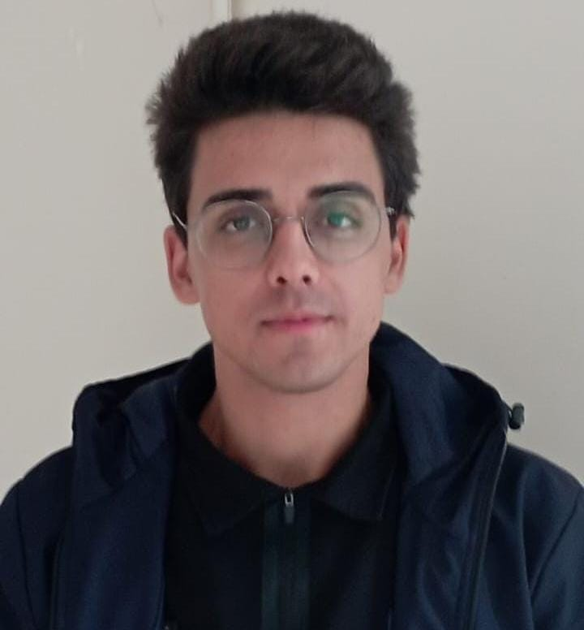

Ali Bocakkıtay
Founder of Wionpav Labs
Medical Student & Research Enthusiast
Kurucu Hakkında | About the Founder
Ali Bocakkıtay, Selçuk Üniversitesi Tıp Fakültesi öğrencisi ve Wionpav Labs'in kurucusudur. Wionpav Labs'i; tıp, sağlık bilimleri ve bilimsel araştırmalar alanında güvenilir bilgi paylaşımını desteklemek amacıyla kurmuştur.
İlgi alanları arasında literatür değerlendirmeleri, bilimsel yazım ve kanıta dayalı tıp yer almaktadır.
Ali Bocakkıtay is a medical student at Selçuk University Faculty of Medicine and the founder of Wionpav Labs. He established Wionpav Labs to promote reliable scientific communication in medicine, health sciences, and research.
His interests include literature reviews, scientific writing, and evidence-based medicine.